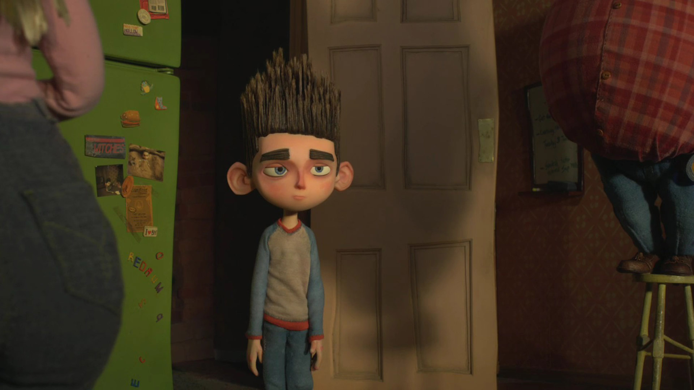

In the small town of Blithe Hollow, Massachusetts, Norman Babcock is an 11-year-old boy who speaks with the dead, including his late grandmother and various ghosts in town. Almost no one believes him and he is isolated emotionally from his family while being ridiculed by his peers. His best friend, Neil Downe, is an overweight boy who is bullied himself and finds in Norman a kindred spirit. After rehearsing a school play commemorating the town's execution of a witch three centuries ago, the boys are confronted by Norman's estranged and seemingly deranged uncle, Mr. Prenderghast, who tells his nephew that he soon must take up his regular ritual to protect the town. Soon after this encounter, Mr. Prenderghast dies. During the official performance of the school play, Norman has a vision of the town's past in which he is pursued through the woods by townsfolk on a witch hunt, embarrassing himself and leading to a heated argument with his estranged and paranoid father Perry, who later grounds him. His mother Sandra tells him that his father’s manner is stern because he is afraid for him. The next day, Norman sees Prenderghast's spirit who tells him that the ritual must be performed with a certain book before sundown that day; then making him swear to complete the task, Prenderghast's spirit is set free and crosses over. Norman is at first reluctant to go because he is scared but his grandmother tells him it is all right to be scared as long as he does not let it change who he is. Norman sets off to retrieve the book from Prenderghast's house (having to take it from his corpse).